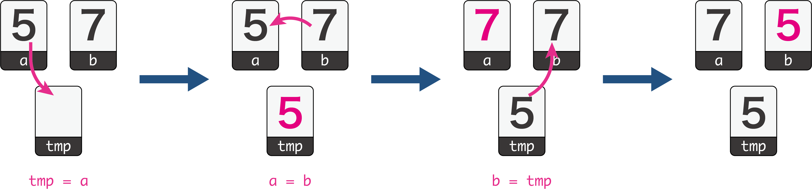

(1) ２値交換
２つの変数の値を入れ替えることを２値交換といいます。変数の値を入れ替えるとき、値を一時的に別の変数に入れておきます。一時的に値を入れておくので、一時的（temporary）を略してtmpやtempといった変数名にすることが多いです。
変数aと変数bの交換
変数aと変数bの値を交換するときには、次の手順になります。
- 変数tmpに変数aを代入する。
- 変数aに変数bを代入する。
- 変数bに変数tmpを代入する。

これをプログラムで書くと、次のようになります。
Colaboratoryのノートブックに書き写しながら、理解しましょう。
# 交換前の値
a = 5
b = 7
print("交換前: a =",a,", b =",b, sep="") # 交換前の値を表示
# 変数aとbの中身を交換
tmp = a
a = b
b = tmp
print("交換後: a =",a,", b =",b, sep="") # 交換後の値を表示
交換前: a = 5, b = 7
交換後: a = 7, b = 5
Pythonでは、変数aとbを入れ換えるとき、次の１行で書くことができます。
b, a = a, b
ただし、共通テスト用プログラム表記（DNCL）では前者の書き方をしているため、このサイトではそれにしたがって変数tmpを用いた前者の書き方をします。
配列内の要素の交換
配列内の要素を交換する場合は、変数tmpを用いて次のように書きます。
Colaboratoryのノートブックに書き写しながら、理解しましょう。
# 交換前の値
arr = [0, 1, 2, 3, 4, 5, 6, 7]
print(arr) # 交換前の値を表示
# 3番目と5番目を入れ換える(番号は0で始まるものとする)。
tmp = arr[3]
arr[3] = arr[5]
arr[5] = tmp
print(arr) # 交換後の値を表示
[0, 1, 2, 3, 4, 5, 6, 7]
[0, 1, 2, 5, 4, 3, 6, 7]
(2) バブルソート（単純交換法）
バブルソート（単純交換法）とは
バブルソート（単純交換法）は、すべての隣り合った値を比較して、小さい方が前になるように交換していく方法です。液中の泡が浮かび上がるように値を移動させるので、バブルソートといいます。ただし、総当たりで繰り返し比較交換していくので、データが大量にあると処理に時間がかかってしまいます。
手順
- 整列していない配列（リスト）を用意します。
- 末尾の２つの値を比較し、右側の値が小さい場合は、２つの値を交換します。
- １つ前の２つの値を比較し、右側の値が小さい場合は、２つの値を交換します。
- (3)を先頭まで繰り返します。すると、最も小さい値が先頭にやってきます（先頭のみが整列済みになりました）。
- (2)〜(3)を未整列の先頭まで繰り返し、すべての値が整列済みになれば終了します。
デモンストレーション
プログラム
バブルソートの基本
Colaboratoryのノートブックに書き写しながら、理解しましょう。
for j in range(n - 2, i - 1, -1):では、jがn - 2からiまで1ずつ減らしながら繰り返します。
range関数の使い方（range(開始値, 終了値, ステップ)）で、ステップに負数を指定する場合は、減っていくforループを参照してください。
arr = [6, 3, 2, 0, 7, 1, 4, 5] # 元のリスト
print("ソート前", arr) # ソート前を出力
n = len(arr)
for i in range(n - 1): # 調べる範囲の開始位置を１つずつ後へ移動していく
for j in range(n - 2, i - 1, -1): # 末尾から先頭に向かって、隣り合う２値を比較する
if arr[j] > arr[j + 1]: # 隣り合う２値の末尾側が小さかったら交換する
tmp = arr[j]
arr[j] = arr[j + 1]
arr[j + 1] = tmp
print("ソート後", arr) # ソート後を出力
ソート前 [6, 3, 2, 0, 7, 1, 4, 5]
ソート後 [0, 1, 2, 3, 4, 5, 6, 7]
手順
バブルソートの2つのループ変数i，jの変化の様子を確かめるために、次のようなプログラムを実行してみましょう。
n = 8
print("i", "j")
for i in range(n - 1): # 調べる範囲の開始位置を１つずつ後へ移動していく
for j in range(n - 2, i - 1, -1): # 末尾から先頭に向かって、隣り合う２値を比較する
print(i, j)
i j
0 6
0 5
0 4
(略)
5 6
5 5
6 6
これを実行すると、n = 8のとき、iとjの値は次のように変化していることがわかります。
i = 0のとき、j = 6 ⇒ 5 ⇒ 4 ⇒ 3 ⇒ 2 ⇒ 1 ⇒ 0
i = 1のとき、j = 6 ⇒ 5 ⇒ 4 ⇒ 3 ⇒ 2 ⇒ 1
...
i = 5のとき、j = 6 ⇒ 5
i = 6のとき、j = 6
つまり、i回目の繰り返しで、配列の末尾から先頭に向かって隣同士の要素を比較・交換していくことで、i番目の要素が整列済みになることがわかります。
このときjの値は末尾の１つ前の値（n-2）から、iまで1ずつ減らしながら繰り返しています。jの値がiまでなのは、i番目までは既に整列済みになっているので、比較する必要がないからです。
バブルソートの途中経過
さきほどのプログラムを次のように書き換えて、途中経過を出力してみましょう。
arr = [6, 3, 2, 0, 7, 1, 4, 5] # 元のリスト
print(arr) # ソート前を出力
n = len(arr)
print("------------------------")
for i in range(n - 1): # 調べる範囲の開始位置を１つずつ後へ移動していく
for j in range(n - 2, i - 1, -1): # 末尾から先頭に向かって、隣り合う２値を比較する
if arr[j] > arr[j + 1]: # 隣り合う２値の末尾側が小さかったら交換する
tmp = arr[j]
arr[j] = arr[j + 1]
arr[j + 1] = tmp
print(arr) # 途中経過を出力
print("------------------------")
print(arr) # ソート後を出力
[6, 3, 2, 0, 7, 1, 4, 5]
------------------------
[6, 3, 2, 0, 1, 7, 4, 5]
[6, 3, 0, 2, 1, 7, 4, 5]
[6, 0, 3, 2, 1, 7, 4, 5]
[0, 6, 3, 2, 1, 7, 4, 5]
[0, 6, 3, 2, 1, 4, 7, 5]
[0, 6, 3, 1, 2, 4, 7, 5]
[0, 6, 1, 3, 2, 4, 7, 5]
[0, 1, 6, 3, 2, 4, 7, 5]
[0, 1, 6, 3, 2, 4, 5, 7]
[0, 1, 6, 2, 3, 4, 5, 7]
[0, 1, 2, 6, 3, 4, 5, 7]
[0, 1, 2, 3, 6, 4, 5, 7]
[0, 1, 2, 3, 4, 6, 5, 7]
[0, 1, 2, 3, 4, 5, 6, 7]
------------------------
[0, 1, 2, 3, 4, 5, 6, 7]
このアルゴリズムの特徴
最小交換回数
最小交換回数はすべてがはじめから整列済みである場合なので、\(0\)回です。
最大交換回数（比較回数）
最大交換回数は、すべての比較において交換が生じた場合です。つまり、最大交換回数＝比較回数です。
整列済みではない部分の要素数が \(n\) 個の場合、1つの要素を整列済みにするまでの比較回数は \(n-1\) 回です。これが次の要素を確定するときには、整列済みではない部分の要素数が \(n-1\)個なので、比較回数は \(n-2\) となります。このように、 \(n\) 個の要素をすべて整列済みにするための比較回数（＝最大交換回数）を求めると、
\[
最大交換回数 = (n-1) + (n-2) + (n-3) + \cdots + 2 + 1 = \frac{1}{2}n(n-1)
\]
となります。
練習問題
問1
問2
問3
問4